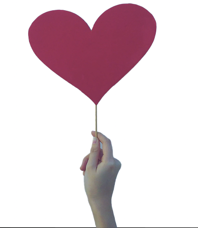

Hvorfor genbrug
Luksus genbrug
Prisforventning
Fordele/ulemper
Bæredygtigt
Secondhand
Anmeldelser
Mest populære
Prisforventning på apps
Sikkerhed
Fake profiler
Snyd
Om os
Kontakt
Mission,værdier og vision
Mål
SH
Miljøet lider
Danskerne er et af de lande som har det højeste tøjforbrug.
Tøjforbruget er 35% højere end, resten af befolningen på jorden.
En dansker køber i gennemsnit 10,9kg tøj om året, som tyder på der bliver gjort nogle fejlkøb.
Det meste af tøjet som bliver sorteret fra, ryger til forbrænding.
Tøjforbruget har konsekvenser for miljøet. Produktionen af 1 t-shirt koster miljøet 11kg CO2.
Mode brancen har ændret sig igennem årene.
Før i tiden udkom der 2-4 kollektioner om året, nu udkommer der 24.
Hjælp miljøet
Jo mere tøj der bliver anvendt, jo mindre CO2 bliver der udledt.
Hjælper på nedskæringen af tøjproduktioner.
